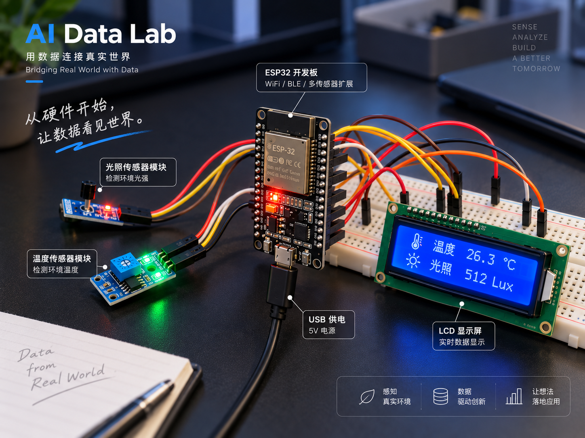

PROJECT 01 / LIGHT & TEMPERATURE
光照与温度环境监测
基于 ESP32、温度传感器、光照传感器和 LCD 显示屏，采集环境中的温度与光照变化，并保存为 CSV 数据用于后续分析和可视化。
已接入历史记录

查看实验设备介绍 ＋收起实验设备介绍 −
硬件 Hardware：ESP32 开发板 / 温度传感器 / 光照传感器 / LCD 显示屏
软件 Software：Arduino IDE / Python
查看历史记录 ＋收起历史记录 −
展示该采集项目最近的实验数据和分析报告。原始数据与可视化结果保存在本地项目目录中，页面仅展示最近记录。
2026-08-12ESP32 温度与光照环境监测实验
2026-08-11ESP32 温度与光照环境监测实验
新文件由人工放入对应目录；更新后按批次展示最近记录，不删除任何历史文件。